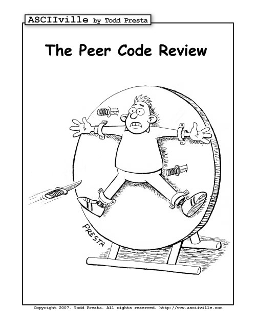
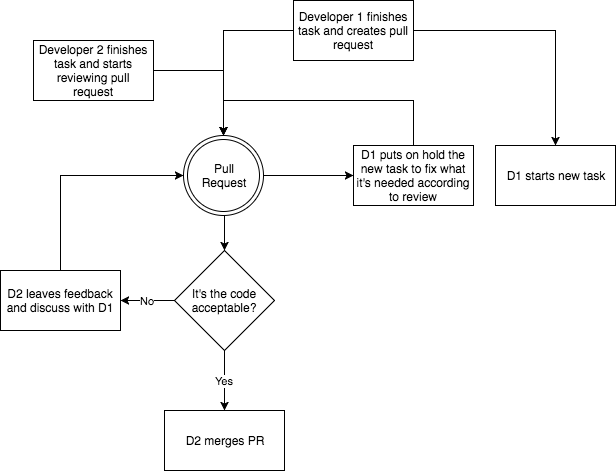
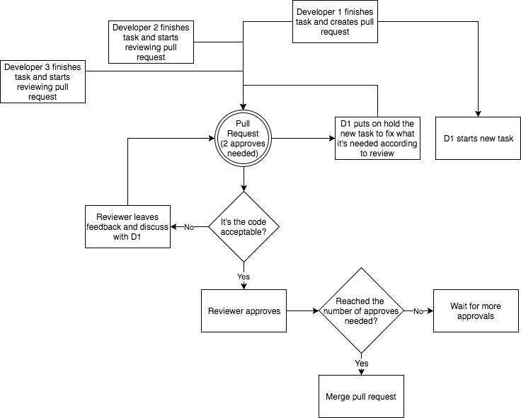

Code Reviews
Why and How?
Why Code Reviews
- To find potential bugs as soon as possible
- It helps to maintain a level of consistency in design and implementation across the
team
- You can learn dark magic tricks from your teammates
- To share the code base knowledge (and decrease the bus factor)
- Improves code quality. Coder tries harder in search for better solutions and more
elegant code
- Team cohesiveness. Team members work together
There's only one thing more important than doing code reviews

Do them properly
As a Developer
Don't become the ninja-rockstar programmer no one wants to work with
- Review you own code before creating a pull request
- Use a tool to check for code style errors
- You will make mistakes. Understand and accept it with humility
- You can always learn from other people
- Leave your ego behind and don't take it personal. You are not your code
As a Reviewer
Is not about pointing at people saying "this is shit"
- Be positive
- Be the "fool" in the room
- If you find something that it's really well done or that made you learn
something, let the developer know!
- Don't be too serious. Try to introduce some joke if possible
- Never replace code from the developer without consulting first
Where to focus
Low priority
- Coding style
- Naming Conventions
Where to focus
Medium priority
- Reusability
- Redundant code
- Simplicity
- Performance
Where to focus
High priority
- Tests have been created for new code
- Error handling
- Security issues
- Funcionality
- Maintainability
Flow in small teams
Two developers

Flow in big teams
With three or more developers

Questions?
Anything you want to discuss?